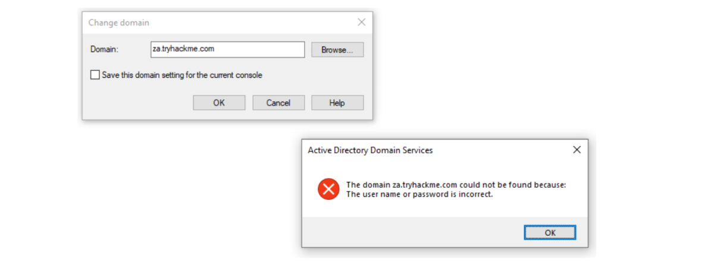
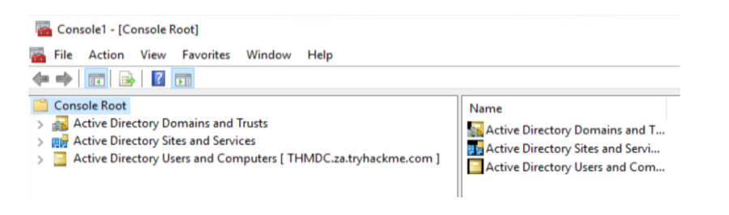
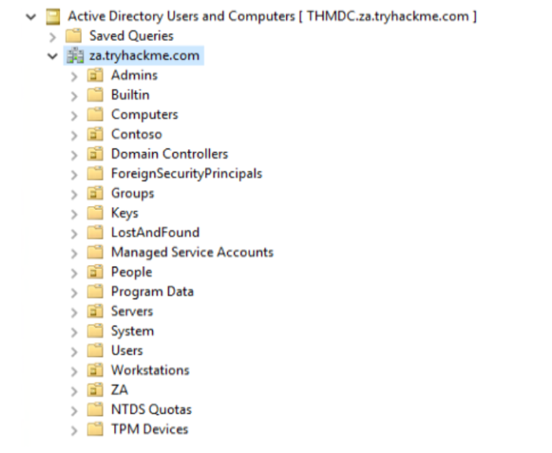
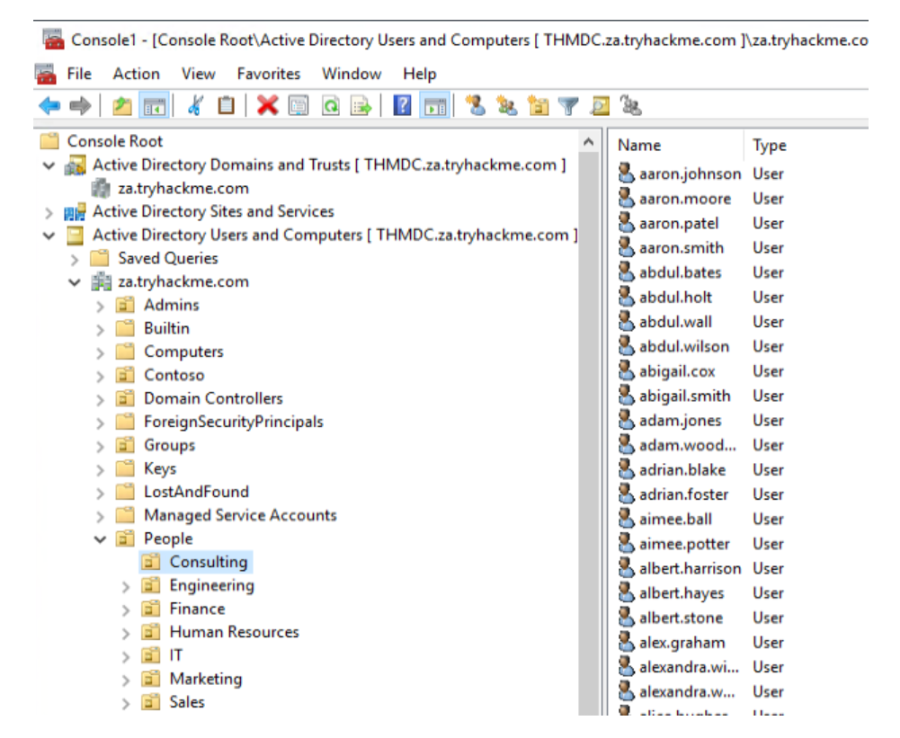
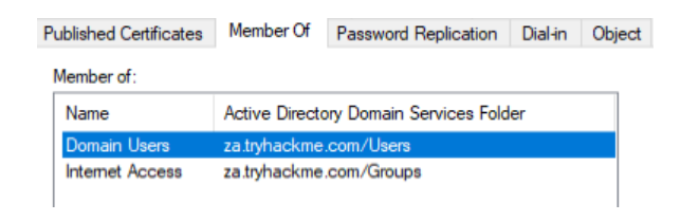
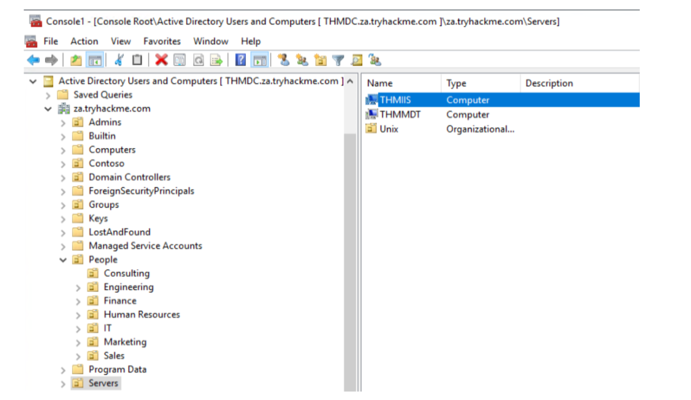

Enumeration through Microsoft Management Console (MMC)
Do The Tasks in Own Windows Machine: (We only need a valid credential to enumerate using the runas tool)
Microsoft Management Console
In this task, we will explore our first enumeration method, which is the only method that makes use of a GUI until the very last task. We will be using the Microsoft Management Console (MMC) with the Remote Server Administration Tools' (RSAT) AD Snap-Ins. If you use the provided Windows VM (THMJMP1), it has already been installed for you. However, if you are using your own Windows machine, you can perform the following steps to install the Snap-Ins:
1. Press Start
2. Search "Apps & Features" and press enter
3. Click Manage Optional Features
4. Click Add a feature
5. Search for "RSAT"
6. Select "RSAT: Active Directory Domain Services and Lightweight Directory Tools" and click Install
You can start MMC by using the Windows Start button, searching run, and typing in MMC. If we just run MMC normally, it would not work as our local windows computer is not domain-joined, and our local account cannot be used to authenticate to the domain.
[However, if we use THMJMP1 system, it will work as it is joined to the Domain]

The above error comes in our own Windows Machine [While adding domain --→ Steps are below].
This is where the Runas window from the previous task comes into play. In that window, we can start MMC, which will ensure that all MMC network connections will use our injected AD credentials.
runas.exe /netonly /user:za.tryhackme.com\jennifer.wright cmd.exe
Then in the new cmd prompt, run mmc
Now, we can add the domain without error.
In MMC, we can now attach the AD RSAT Snap-In:
1. Click File -> Add/Remove Snap-in
2. Select and Add all three Active Directory Snap-ins
3. Click through any errors and warnings
4. Right-click on Active Directory Domains and Trusts and select Change Forest
5. Enter za.tryhackme.com as the Root domain and Click OK
6. Right-click on Active Directory Sites and Services and select Change Forest
7. Enter za.tryhackme.com as the Root domain and Click OK
8. Right-click on Active Directory Users and Computers and select Change Domain
9. Enter za.tryhackme.com as the Domain and Click OK
10. Right-click on Active Directory Users and Computers in the left-hand pane
11. Click on View -> Advanced Features
If everything up to this point worked correctly, your MMC should now be pointed to, and authenticated against, the target Domain:

Users and Computers
Let's take a look at the Active Directory structure. For this task, we will focus on AD Users and Computers. Expand that snap-in and expand the za domain to see the initial Organisational Unit (OU) structure:

Let's take a look at the People directory. Here we see that the users are divided according to department OUs. Clicking on each of these OUs will show the users that belong to that department.

Clicking on any of these users will allow us to review all of their properties and attributes. We can also see what groups they are a member of:

We can also use MMC to find hosts in the environment. If we click on either Servers or Workstations, the list of domain-joined machines will be displayed.

If we had the relevant permissions, we could also use MMC to directly make changes to AD, such as changing the user's password or adding an account to a specific group. Play around with MMC to better understand the AD domain structure. Make use of the search feature to look for objects.
Benefits
1. The GUI provides an excellent method to gain a holistic view of the AD environment.
2. Rapid searching of different AD objects can be performed.
3. It provides a direct method to view specific updates of AD objects.
4. If we have sufficient privileges, we can directly update existing AD objects or add new ones.
Drawbacks
1. The GUI requires RDP access to the machine where it is executed.
2. Although searching for an object is fast, gathering AD wide properties or attributes cannot be performed.